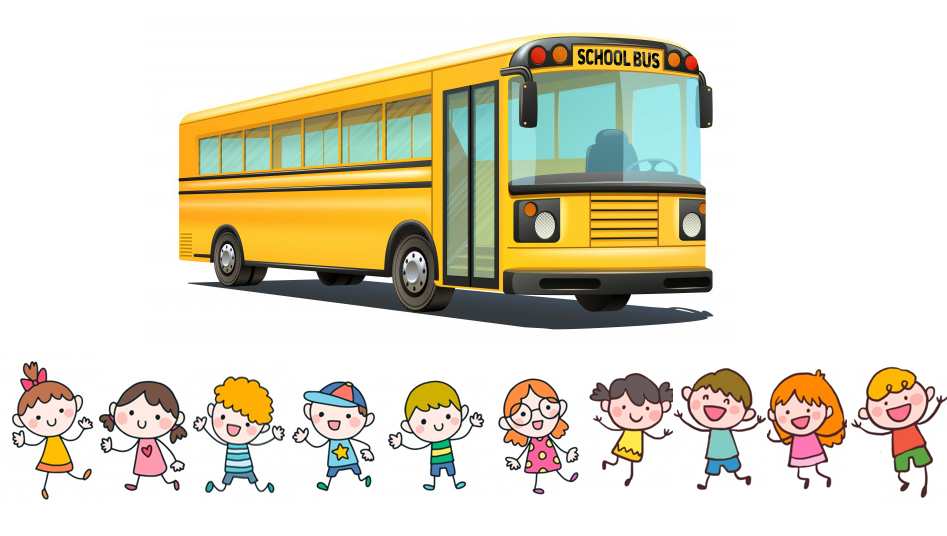
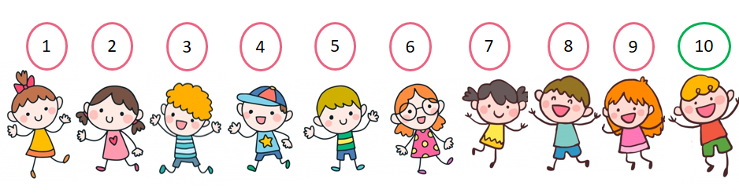
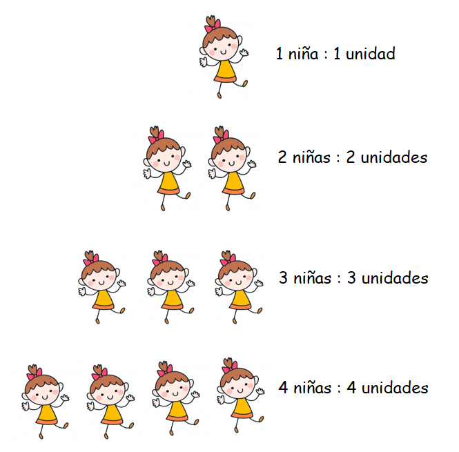
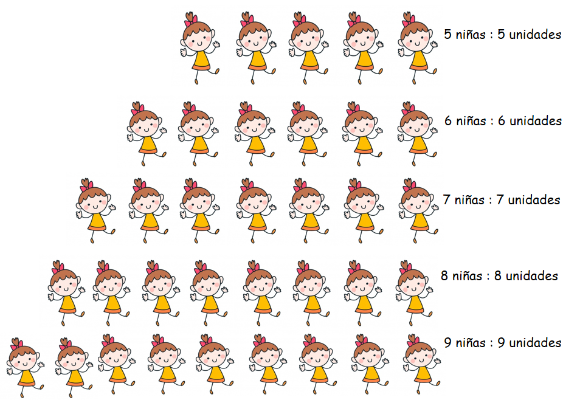
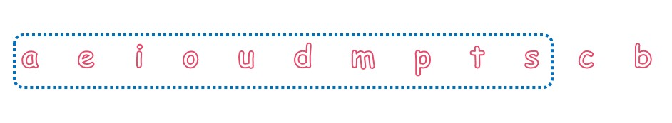
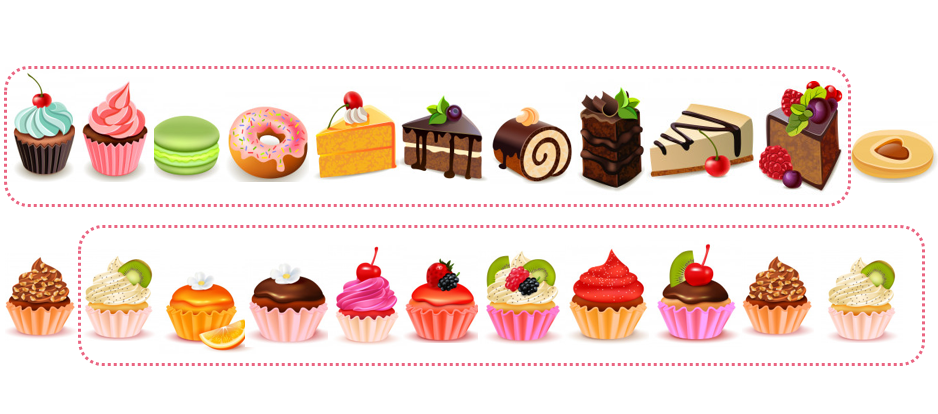
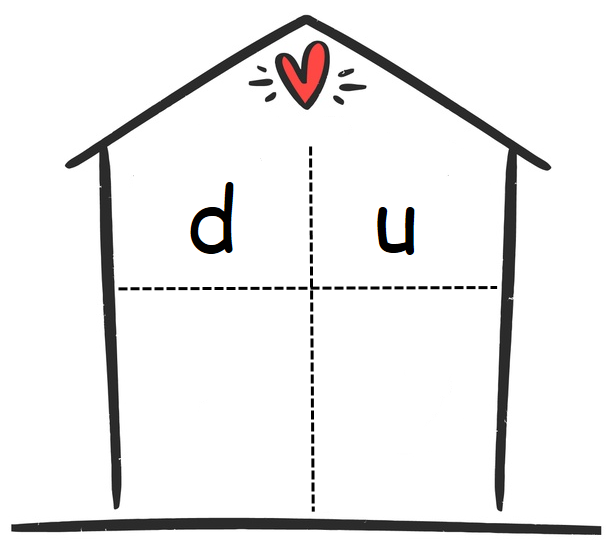
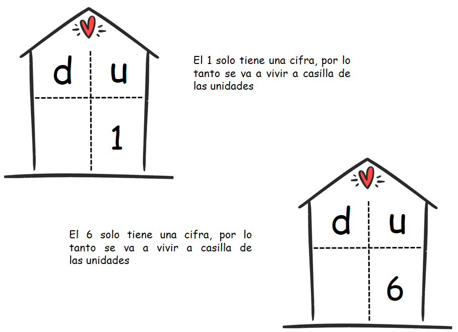
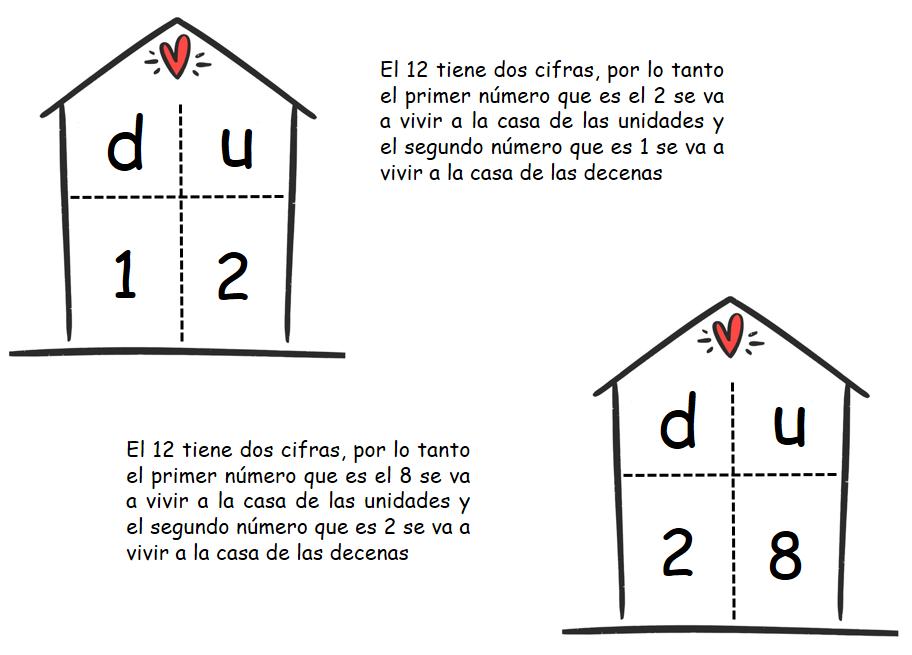
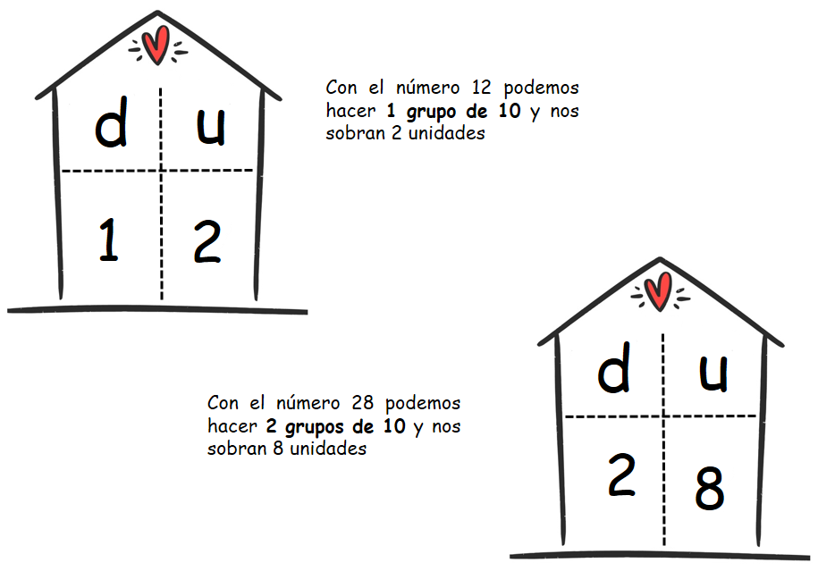

Unidades y Decenas
Parte 1- Empezamos
¿Qué son las decenas y las unidades y para qué nos sirven?
Observa estos niños y niñas que se encuentran en la fila de la parada del autobús:
Observa:
El conductor ha dicho que sólo puede ir una Decena de niños en cada viaje. ¿Qué quiere decir esto?
Cada niño en la fila representa una unidad.
Observa:
Cuando llegamos a Diez, hemos hecho un grupo de diez unidades que se llama Decena.
Regla:
Unidad: es 1
Decena: es 10
Lo que el conductor quiere decir es que en cada viaje sólo pueden ir 10 niños.
Las unidades y las decenas nos sirven para contar más rápido, para sumar, restar, multiplicar, dividir y descomponer los números más fácilmente.
- Lo que aprenderemos sobre decenas y unidades:
- ¿Qué son las unidades?
- ¿Qué son las decenas?
- Descomposición de números del 1 al 99
(1)¿Qué son las unidades?
Las unidades como lo indica su nombre son una sola cosa.
Observa:  Cuando llegas a 10 has llegado a la decena.
(2)¿Qué es una decena?
Las decenas son grupos de 10 unidades, es decir, un conjunto de 10 cosas.
Observa:
Acá tenemos letras. Vamos a agruparlas en un conjunto para que sean una decena. ¿Cuántas letras deben ir en el conjunto?
En el conjunto deben ir 10 letras. Observa que se quedaron por fuera 2 letras, como no alcanzan a estar dentro del grupo de las decenas, estas dos letras son 2 unidades.
¡Pensemos!
Si queremos hacer 2 decenas ¿Cuántos grupos de 10 elementos debes hacer?
Para hacer 2 decenas debemos hacer 2 grupos de 10 elementos cada uno, porque 10 + 10 =20.
“Tip: Para contar las decenas es más fácil si sabes contar de 10 en 10. Recuerda el conteo: 10, 20, 30, 40, 50, 60, 70, 80, 90.
(3)Descomposición de números:
Los números del 1 al 99 están formados por unidades o por unidades y decenas, es decir por una o dos cifras, es por esto que estos números los podemos descomponer usando la casita de las unidades y las decenas.
Observa:
- Para usar esta casita debemos tener en cuenta 2 cosas:
- Los números del 0 al 9 tienen una sola cifra, es decir que sólo tienen unidades, por lo tanto se ubican en la casilla con la letra U (Unidades).
- Los números del 10 al 99 tienen dos cifras, es decir tienen unidades y decenas, por lo tanto escribimos la primera cifra en la casilla con la letra U (Unidades) y el segundo número en la casilla con la letra D (Decenas).
Observa, qué fácil es:

Usando esta casita puedes ver más fácilmente cuántas unidades o decenas tiene un número. Recuerda que el número que pongas en las decenas nos indica cuántos grupos de 10 puedes hacer con el número de la casita.
Observa:
Material extra para trabajar el tema de unidades y decenas:
En este enlace encontrarás diferentes ejercicios sobre decenas y unidades creado por Fichasparaimprimir.com.
En este enlace podrás descargar diversas fichas de trabajo sobre unidades y decenas creadas por Mundo ABC.
En este enlace podrás encontrar diferentes actividades sobre valor posicional .